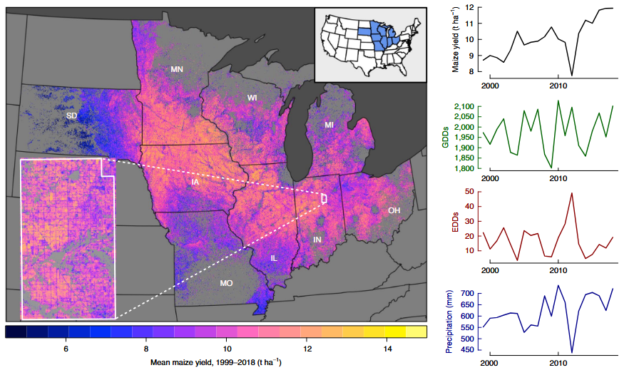
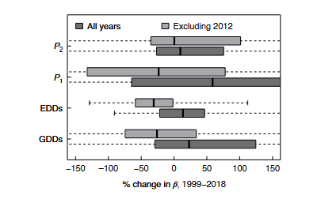
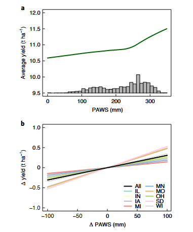
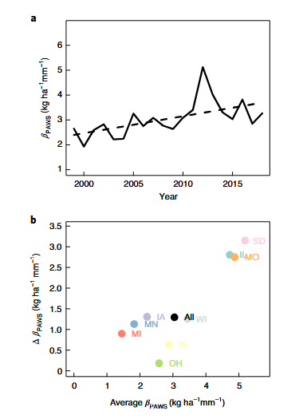

美国玉米产量干旱敏感性的变化——时空双策略的方法论启示
Changes in the Drought Sensitivity of US Maize Yields
美国玉米产量干旱敏感性的变化
文献信息： Lobell, D. B., Deines, J. M., & Di Tommaso, S. (2020). Nature Food, 1, 729–735.
DOI: 10.1038/s43016-020-00165-w
作者机构： 斯坦福大学 地球系统科学系; 斯坦福大学 粮食安全与环境中心
一、研究背景 / Research Background
1.1 核心悖论：产量在提高，但干旱敏感性也在提高
美国玉米带是全球最高产的农业区之一。过去几十年中，玉米产量持续增长——得益于遗传改良（耐旱品种DT、转基因抗虫/抗除草剂性状）、管理优化（早播、密植、少耕/免耕）和环境变化（CO₂施肥效应、O₃浓度下降）。一个自然的预期是：这些进步应该使作物更”抗逆”——即降低干旱敏感性。
但本文揭示了一个深刻的反直觉事实：
自1999年以来，美国玉米带的干旱敏感性不仅没有下降，反而增加了约55%。产量在所有条件下都在提高，但在干旱条件下与良好条件下的产量差距反而扩大了。
这一发现早在30多年前就被育种学家Duvick（1989）预言：”现代杂交种在环境有利季节可以大幅扩展产量，但当环境因素压倒性地限制时，它们的产量回落也相应地比老杂交种更大——即使新杂交种在恶劣条件下也比老品种产量高。”
1.2 为什么”观测到适应性行为”不等于”有效适应”？
农民确实在不断改变行为——改品种、提前播种、增加密度。但行为的改变不等于干旱敏感性的降低：
- 密植的负效应： 更高的种植密度增加了作物群体水分需求，反而可能加剧干旱敏感性（Assefa et al., 2018）。
- DT品种的行为反馈： 耐旱品种使农民敢于在更贫瘠的土壤上密植——这一行为改变可能抵消甚至逆转品种本身的耐旱优势。
- CO₂的双刃效应： 虽然CO₂升高提升了水分利用效率，但也可能增加早期叶面积生长和总水分消耗（Gray et al., 2016; Jin et al., 2018）。
1.3 方法论困境：如何检测干旱敏感性的变化？
传统实证方法面临一个几乎无解的根本困境：
在聚合尺度（如县级），严重干旱的发生频率太低，样本量不足以在统计上区分”敏感性无变化”和”敏感性发生了大幅变化”。
本文的核心贡献在于系统地比较了两种检测干旱敏感性变化的实证策略——并证明了其中一种（基于空间变异）远比另一种（基于时间变异）更有效。
二、关键科学问题 / Key Scientific Questions
1999–2018年间，美国玉米带玉米产量对干旱的敏感性是否发生了变化？为什么传统的时间序列方法无法回答这个问题？空间替代策略如何克服这一限制？
具体分解为四个子问题：
- 方法比较问题（最核心）： 基于天气时间变异的Panel模型 vs. 基于土壤空间变异的子县级分析——哪一种能有效检测干旱敏感性的时间变化？
- 敏感性变化问题： 玉米产量对土壤有效持水量（PAWS）的敏感性如何随时间演变？
- 驱动因素问题： 敏感性增加的可能驱动因素是什么——天气变化？密植？还是其他因素？
- 方法论推广问题： 这一发现对未来的气候变化影响检测研究有何启示？
三、数据与方法 / Data and Methods（重点详解）
3.1 两种策略的对比框架
本文的方法论核心在于同时运行两种互补的实证策略并比较其结果——这一设计本身就是最重要的方法论贡献。
| 维度 | 策略1：时间策略（Panel模型） | 策略2：空间策略（子县级PAWS分析） |
|---|---|---|
| 干旱暴露的变异来源 | 年际天气波动（GDD, EDD, 降水） | 县内土壤有效持水量（PAWS）的空间差异 |
| 变异频率 | 严重干旱十年数次 → 样本量不足 | 每年每县数万个30m像素 → 样本量极大 |
| 统计模型 | 县级产量 ~ 天气 + 天气×年交互 | 像素级产量 ~ PAWS（控制县-年固定效应） |
| 核心假设 | 年际天气变异可识别敏感性趋势 | 县内土壤空间变异可反映干旱暴露梯度 |
| 结果 | 无结论——所有变量的趋势估计包含±100%变化 | 稳健结论——PAWS敏感性增加55%（P<0.02） |
3.2 数据来源详解
产量数据
SCYM方法（Scalable Crop Yield Mapper）——本文最关键的数据基础：
这是一个基于卫星的30m分辨率玉米产量制图方法，其核心流程为：
- APSIM作物模型模拟： 在少量代表性站点（由位置特定的天气和土壤特征定义）运行APSIM模型，覆盖广泛的管理条件范围和多年时间跨度。
- 统计关系构建： 利用模拟结果，建立玉米产量与生长季天气+作物冠层绿度之间的统计关系。冠层绿度通过对所有可用Landsat影像进行调和回归（harmonic regression）提取。
- 关键自变量（SCYM输入）：
- 6–8月降水量
- 6–8月太阳辐射
- 7月水汽压差（VPD）
- 8月最高气温
- 注意：SCYM不含任何土壤输入——这使得后续分析中用SCYM产量对土壤变量回归不会产生循环论证
- 验证性能： 对研究区762个县的1999–2018年数据，SCYM能解释64%的产量变异（RMSE=1.2 t/ha），县内年际R²中位数0.68，同年县内空间R²中位数0.62。
玉米像素识别：
- 2008–2018：使用USDA Cropland Data Layer (CDL)
- 1999–2007：使用基于随机森林的CDL扩展分类（Wang et al., 2020）
采样策略：
- 每州随机生成20,000个点（在2008–2018年间至少6年被分类为玉米或大豆的区域内）
- 每年每个点提取SCYM产量（仅玉米年份）
- 最终数据集：每年63,195–92,408个玉米观测值
土壤数据
PAWS（Plant-Available Water Storage，植物有效储水量）：
- 来源：gSSURGO（Gridded Soil Survey Geographic）数据库
- 物理含义：土壤剖面中可供植物吸收的水分总量（mm）
- 关键特征：PAWS时间上几乎不变，但空间变异极大（县内标准差49mm >> 县内7月降水标准差12mm 或 ET₀标准差2mm）——这是空间策略可行的物理基础
NCCPI（National Crop Commodity Production Index）：
- 综合土壤生产力指数，整合了多种土壤和天气特征
- 用于验证PAWS的敏感性结论是否可推广至更综合的土壤质量指标
天气数据
- 来源： PRISM（Parameter-elevation Regressions on Independent Slopes Model），2.5弧分（~5km）分辨率
- 处理： 各县级计算时仅使用CDL分类为耕地的网格单元平均
- 变量： 日最高/最低气温 → 小时温度正弦插值 → GDD和EDD
土壤湿度数据
- 来源： TerraClimate 一维水量平衡模型（月步长）
- 输入： 有效持水量（AWC）、降水、Penman-Monteith参考蒸散发（ET₀）
- 关键特征： 县内土壤湿度变异与PAWS高度相关（r=0.85）——证实了PAWS是土壤湿度空间变异的主要驱动因素
- 验证： 对研究区地表径流数据有良好验证（Abatzoglou et al., 2018）
3.3 策略1：时间策略——Panel模型（核心方法之一，详细推导）
模型设定
从最一般的因果框架出发：
Yi,t = Xi,tβ + Zi,tγ + εi,t (1)
其中，Y为产量（t/ha），X为观测到的天气变量，Z为未观测的混杂因素。Z与X可能相关，直接估计(1)会产生遗漏变量偏差。
固定效应Panel模型（Within-Group Estimator）：
Yi,t = Xi,tβ + ci + εi,t (2)
其中ci为县固定效应，吸收所有不随时间变化的未观测异质性。
去均值变换（核心识别策略）：
定义县内时间均值：
Ȳi = X̄iβ + ci + ε̄i (3)
(2) − (3)：
Yi,t − Ȳi = (Xi,t − X̄i)β + (εi,t − ε̄i) (4)
β的识别仅依赖于每个县内部变量偏离其自身时间均值的程度。 关键假设：县内任何随时间变化且未被观测的异质性与X不相关。
本文的扩展设定（引入州×年趋势+天气×年交互）：
Yi,t = Wi,tβ + Wi,t·T·δ + ci + si×t + εi,t (5)
- si×t：州线性时间趋势，吸收与时间线性相关的未观测变化
- Wi,t·T·δ：天气变量与年份的交互项——δ是本文要检测的核心参数，表示天气敏感性是否随时间变化
天气变量W的定义
GDD（生长度日，8–30°C）：
GDD = Σh=1N max(0, min(Temph − 8, 30 − 8)) (6)
EDD（极端度日，>30°C）：
EDD = Σh=1N max(0, Temph − 30) (7)
- Temph：小时温度，通过对PRISM日最低/最高气温进行正弦插值获得
- 累积期：4月1日–9月30日
- GDD和EDD之间的30°C分界点在区域内被广泛验证为玉米产量的非线性阈值（Schlenker & Roberts, 2009; Lobell et al., 2013）
分段线性降水（在650mm处设阈值）：
P1 = max(0, P − P*) (8) —— 低于650mm为有益降水
P2 = min(0, P − P*) (9) —— 高于650mm为过量降水
- P* = 650mm通过以50mm增量扫描、选择样本外预测精度最优的值确定
- 分段线性的表现与降水二次项相当，但系数解释更为直观
不确定性量化
200次块状Bootstrap（以年为块进行重抽样），以考虑模型残差的空间相关性。
结果： 四个天气变量（GDD, EDD, P1, P2）的敏感性趋势中位数均为略微增加，但所有变量的Bootstrap分布都同时包含了+100%和−100%的变化——即完全无统计显著性。是否包含2012年极端干旱年不影响结论。
根本原因： 20年间的严重干旱事件太少，无法通过年际天气变异来识别敏感性的趋势变化。这从根本上决定了”天气×年交互”策略在气候学时间尺度上的统计功效不足。
3.4 策略2：空间策略——子县级PAWS分析（核心方法之二，详细推导）
为什么空间变异可以替代时间变异？
物理逻辑链：
PAWS高 → 土壤储水能力强 → 降水不足时植物仍可获取深层水分 → 干旱胁迫减轻 → 产量更高
因此，PAWS-产量的梯度（即βPAWS）反映了干旱敏感性的一个可度量维度。关键是PAWS在县内的空间变异（SD=49mm）远大于天气在县内的时间变异——提供了更大的统计功效。
基础模型（控制县-年固定效应）：
Yi,j,t = Si,j · β + ci,t + εi,j,t (10)
- i：县；j：30m像素；t：年份
- ci,t：县-年联合固定效应——这是本文最关键的控制策略
县-年固定效应的含义：
ci,t吸收了第i县第t年所有县层面均质的因素——包括该年的天气条件（降水、温度、VPD）、该年的CO₂浓度、该年的区域经济条件、该县的平均管理实践。因此，β仅依赖于县内部的PAWS空间变异来识别。
换句话说： 在同一个县的同一年中，天气完全相同，唯一导致产量空间差异的（可观测）因素是土壤持水能力——这就构建了一个”天然实验”。
年度独立回归（检测时间趋势）：
对每一年t分别估计方程(10)，得到βt的时间序列，然后检验βt是否随时间系统性增加。
替代设定：全时段交互模型
Yi,j,t = Si,j · β₀ + Si,j · t · β₁ + ci,t + εi,j,t
其中β₁直接给出PAWS敏感性的线性时间趋势。两种方法给出了一致的结果。
验证分析：土壤湿度和NCCPI
土壤湿度分析（补充验证——排除SCYM循环论证）：
使用TerraClimate模型估算的各月土壤湿度替代PAWS。县内土壤湿度变异与PAWS高度相关（r=0.85），但土壤湿度同时受天气驱动——因此具有年际动态性，更直接地反映当年的干旱胁迫。
关键注意： SCYM的部分输入与土壤湿度重叠（如降水、VPD），但SCYM系数在时间上是固定的。这意味着SCYM产量对土壤湿度的敏感性变化仅能通过冠层绿度的变化体现——如果检测到敏感性增加，那是最保守的估计（偏向于低估真实变化）。
结果：7月、8月和9月的土壤湿度敏感性均呈高度显著增加（Supplementary Fig. 5）——与PAWS结果一致。
NCCPI分析（排除”仅水相关”的解释）：
NCCPI是一个比PAWS更综合的土壤生产力指数（包含更多土壤属性），其对产量的影响甚至比PAWS更强，且从1999年到2018年翻了一番。这表明PAWS敏感性的增加至少部分反映了一个更广泛的模式——良好土壤条件（不仅仅是水分）的相对重要性在提升。
测量误差的讨论
SCYM产量和gSSURGO土壤数据均存在测量误差——倾向于使βPAWS低估（attenuation bias）。平均PAWS效应（0.3 t/ha per 100mm）仅为其他研究使用实测数据估计值的三分之一。但随机测量误差不会产生虚假的趋势——如果有什么影响，SCYM早期年份（Landsat 5/7）的质量若低于后期（Landsat 8），只会放大真实趋势的低估。
3.5 驱动因素分析（核心方法之三）
排除天气趋势假说
建立包含PAWS×天气交互项的模型：
Yi,j,t = Si,j · β + Si,j · Wi,t · γ + ci,t + εi,j,t
- PAWS敏感性在更暖（GDD↑, EDD↑）和更干（降水↓）条件下更高——交互项γ显著
- 但1999–2018年间，GDD的略微增加倾向于提高PAWS敏感性（+0.02 t/ha per 100mm），而其他天气变量的趋势倾向于降低敏感性
- 净天气趋势效应极小（<0.02 t/ha per 100mm），方向与观测到的0.13 t/ha增加相反
- 结论：天气变化不是敏感性增加的主要驱动因素
密度假说
USDA数据显示研究区玉米平均种植密度从1999年到2018年增加了约**20%**。更高的密度 → 更大的群体水分需求 → 在PAWS低的土壤上水分胁迫更早、更严重 → PAWS-产量梯度变陡。
这与农学文献（Assefa et al., 2018; DeLucia et al., 2019）一致。
“其他胁迫减少”假说
转基因抗虫/抗除草剂性状的普及（从1999年<25%到2018年>75%）大幅减少了病虫害和杂草造成的产量损失。当这些”其他胁迫”不再主导产量变异时，水分胁迫在剩余变异中的相对重要性自然提升——即使绝对水分胁迫并未恶化。
四、新发现与新认识 / New Findings
发现1：时间策略完全失效——Panel模型无法检测敏感性变化（图3）

图1解析（Fig. 1, p.730）：研究区域与数据特征。 左侧为1999–2018年SCYM卫星产量图（30m分辨率），内嵌图为单个县（IN Wabash）的像素级产量分布。右侧为区域平均产量、GDD、EDD和生长期降水的时间序列——2012年是显著的极端干旱年。
策略1的核心结果（Fig. 3, p.732）：

四种天气变量（GDD, EDD, P1, P2）的敏感性趋势估计（1999–2018变化百分比）的中位数均为轻微增加，但Bootstrap分布范围极宽——所有变量均同时包含−100%和+100%的变化。无论是否包含2012年，无论使用九州还是100°W以东全部州，也无论将时间延长至1981年——结论不变：县级尺度的天气时间变异不足以识别敏感性趋势。
| 天气变量 | 1999–2018敏感性变化（中位数） | Bootstrap范围 | 结论 |
|---|---|---|---|
| GDD | 轻微正 | −100% ~ +100% | 无统计学意义 |
| EDD | 轻微正 | −100% ~ +100% | 无统计学意义 |
| P1（有益降水） | 轻微正 | −100% ~ +100% | 无统计学意义 |
| P2（过量降水） | 轻微正 | −100% ~ +100% | 无统计学意义 |
发现2：空间策略揭示了55%的干旱敏感性增加——稳健且显著（图4-5）

图4（p.732）：产量对土壤有效持水量的敏感性
- 每增加100mm PAWS，产量平均增加0.30 t/ha
- 干旱州（SD, MO）的敏感性几乎是湿润州（MI, MN）的两倍
- PAWS效应（0.30 t/ha/100mm）是等量生长季降水效应（0.10 t/ha/100mm）的三倍——凸显土壤的关键性

图5（p.733）：敏感性随时间的变化
- 1999年：每100mm PAWS → 产量+0.23 t/ha
- 2018年：每100mm PAWS → 产量+0.36 t/ha
- 增幅55%（P<0.02），排除2012年后仍稳健
- 九个州全部呈增加趋势，基线敏感性越高的州（SD, IL, MO）增加越快
| 指标 | 1999年 | 2018年 | 变化 |
|---|---|---|---|
| PAWS效应 (t/ha per 100mm) | 0.23 | 0.36 | +55% |
| NCCPI效应 | 基准 | ~2倍 | ~+100% |
| 土壤湿度敏感性（7–9月） | 基准 | 显著增加 | 高度显著 |
发现3：天气变化不是驱动力——密植和其他因素才是
排除了天气趋势假说（净天气效应<0.02且方向相反），提出了两个互补机制：
- 密植假说（主因）： 密度+20% → 水分需求增加 → PAWS梯度变陡
- “其他胁迫减少”假说（辅因）： 转基因性状普及 → 病虫草害损失减少 → 水分胁迫在剩余变异中的相对重要性上升
发现4：产量在所有土壤条件下均在增长——但”干旱代价”也在上升
即使是PAWS最低的贫瘠土壤，1999–2018年间产量也呈稳健正增长。但PAWS敏感性增加的幅度（0.13 t/ha）仅为总产量增益（2.1 t/ha）的~5%——即产量的绝对提高远超干旱敏感性的恶化。然而从相对角度看，干旱年份相对于丰水年份的”产量差距”确实在扩大——这正是Duvick（1989）的预言。
五、讨论要点 / Discussion Highlights
5.1 “实证研究可以检测适应性吗？”——一个根本性的方法论挑战
本文最具颠覆性的结论是：使用聚合尺度的天气时间变异来检测作物对气候变化的适应性，在根本上统计功效不足——因为严重干旱的发生频率太低。
这对大量已发表的文献具有深远的警示意义：
- 基于”天气×年交互”的Panel模型报告了各种”趋势”——本文证明这些趋势在统计上可能完全不可靠
- 空间的替代方案（利用土壤差异作为干旱暴露的代理）提供了统计功效极高的互补路径
5.2 卫星产量数据+土壤数据 = 天然实验
本文展示了一种低成本的实证策略：
- 卫星产量制图（SCYM，30m）→ 提供空间连续的、不受自报偏差影响的产量数据
- 土壤数据库（gSSURGO）→ 提供时间不变但空间高度变异的环境梯度
- 县-年固定效应 → 控制所有县层面的混淆因素
- 结果：一个相当于”在同一个县同年、唯一变量是土壤”的准实验设计
5.3 “适应”与”敏感性”的微妙关系
即使DT品种在控制实验中确实提高了干旱条件下的产量（Gaffney et al., 2015; Cooper et al., 2014），但农民可能因为种植了DT品种而做出补偿行为（如增加密度、扩展到更贫瘠的土壤）——这些行为的净效应可能反而提高系统层面的干旱敏感性。**”品种-水平”的适应成功不一定转化为”系统-水平”的敏感性降低。**
六、结论 / Conclusions
6.1 核心结论
时间策略无能为力： 基于县级天气年际变异的Panel模型，即使在20年数据下，也无法检测到干旱敏感性的大幅变化——因为严重干旱太罕见。
空间策略揭示了55%的增加： 通过利用县内土壤PAWS的空间变异，发现1999–2018年美国玉米带玉米的干旱敏感性显著增加了约55%。
密植是关键驱动因素： 种植密度增加约20%是敏感性上升最可能的原因，而非天气趋势的变化。
DT品种未逆转系统趋势： 尽管耐旱品种在田间试验中有效，但在整个系统的聚合层面，干旱敏感性仍在上升。
6.2 方法论启示
- “天气×时间交互”的反思： 已发表的Panel模型研究中报告的敏感性趋势可能大面积不可靠。
- 空间替代策略： 利用土壤水分特征的空间变异作为干旱暴露的代理——统计功效远超时间替代。
- 卫星数据的关键作用： 没有30m分辨率的SCYM产量数据，县内空间分析不可能实现。
6.3 局限性
- PAWS非纯粹水分效应： PAWS可能与NCCPI等其他土壤属性相关——敏感性增加至少部分反映了更广义的”好土壤vs坏土壤”分化。
- SCYM与土壤湿度的重叠： 土壤湿度敏感性分析中使用SCYM产量存在循环论证风险（SCYM部分自变量与土壤湿度重叠），但SCYM系数的时间不变性使这一偏差倾向于低估真实趋势。
- 测量误差： SCYM和gSSURGO的测量误差使绝对敏感性估计偏低，但不影响趋势的稳健性。
- 缺乏田间尺度验证： 无法直接分离DT品种效应与密植效应——需要协调的田间实验。
七、研究亮点 / Research Highlights
| 序号 | 亮点 | 说明 |
|---|---|---|
| 1 | 双策略对比的方法论框架 | 同时运行时间策略和空间策略并直接比较——证明时间策略在原理上统计功效不足，这是对大量已发表文献的根本性反思 |
| 2 | 土壤PAWS作为干旱暴露的空间代理 | 利用县内PAWS变异（SD=49mm >> 天气变异）构建”准实验”——在同一个县同年仅有土壤不同的条件下识别干旱敏感性 |
| 3 | 县-年联合固定效应 | ci,t吸收了所有县层面均质因素（天气、CO₂、经济条件），仅依赖县内部空间变异来识别——控制策略极其干净 |
| 4 | 30m卫星产量数据 | SCYM提供每年6.3–9.2万个县内像素观测——没有这种分辨率的数据，空间策略不可能实现 |
| 5 | 发现无视适应努力的敏感性上升 | 尽管DT品种推广、转基因普及和农业技术进步，系统层面的干旱敏感性仍在上升——扭转了”适应=降低敏感性”的直觉 |
| 6 | 提供可操作的未来研究路线 | 明确指出恢复研究人员对田间尺度产量数据（如政府保险数据）的访问权限，以及协调的田间实验（比较新旧品种+不同密度）是未来关键 |
| 7 | Duvick预言的实证确认 | 用30年后的卫星数据证实了1989年的育种学预言——“modern hybrids yield more under all conditions, but the gap between good and poor conditions grows” |
八、方法流程总图
1 | |